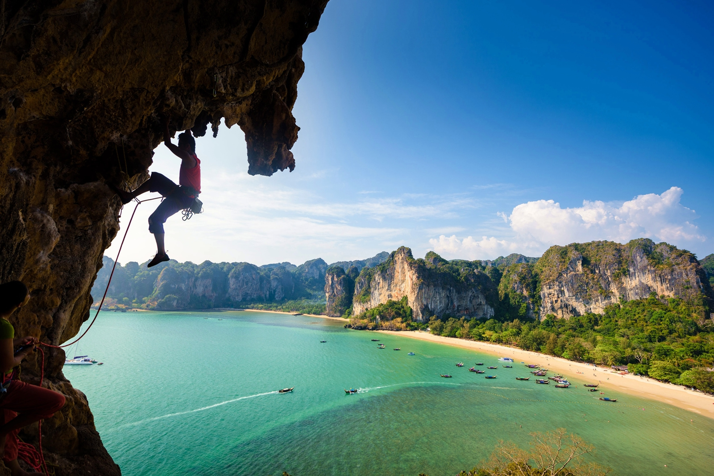

INTERESTING PLACES IN THAILAND
Since the founding of Bangkok as the Nations capital by King Rama I, The Grand Palace has been the major architectural symbol of The Thai Royal family. In the present time, The Royal Family resides at Chitralada Palace while The Grand Palace is used for ceremonial purposes.
A lofty peak in the heart of the dense jungle, Khao Sok sits at the center of the largest rainforest area in the entire southern region and covers a massive 738.74 square kilometers, including the area to the north of the Rajjaprabha Dam.
Wat Arun Ratchawararam Ratchawaramahawihan is located on Arun Amarin Road on the Thon Buri side of the Chao Phraya River directly opposite Wat Pho. It is a temple that has existed since the Ayutthaya period.
Coral Island or Ko He is located Phuket's south coast, is so well known for its coral reef that it is often referred to simply as Coral Island. In addition to the splendid reefs there are two fine beaches on the north and west of the island.
Chatuchak Market is located on Phahon Yothin Road near Chatuchuk Park and is a large market. The area in the flea market has been divided into 27 projects with over 8,000 retail stalls. There are numerous products for tourists to choose from, e.g., clothing, bags, decorations, earthenware, handicrafts, souvenirs, and food and beverage services.

Railey Beach is an outstanding beach with beautiful features with limestone cliffs. The beach is divided into 3 parts: railay beach West that is surrounded by limestone cliffs, where it is possible to swim and also a point to watch the sunset.
Travel around the forest in Sai Yok by riding on elephant. They have in total of 40 elephants ready of service. You can feel to bond between human and elephant.
Wat phra that doi suthep is the most important temple in Chiang Mai, Thailand. Built in the early 19th Buddhist century, the beauty of Wat Phra That Doi Suthep is marked by seven-headed serpent statues that line the stairs to the temple where a Chiang Saen style golden pagoda and all its exquisite Lanna architecture is situated.